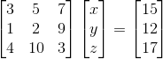

首先来看一组方程组


常规算法是直接消元分别求x和y，在这里我们先把它当成一个矩阵看待，以上公式可以转化成AX=b的矩阵相乘形式

矩阵乘法运算规则，如下例子，不再赘述：
对于刚刚那个AX=b的式子，矩阵A为：
我们可以将其分成两行，再代入AX=b，可以得到如下：
这时可以用直线图来表示，x，y分别代表直线图上的坐标，其图像如下：
那么换种思路，我们把矩阵A分成两列，再代入AX=b，可以得到如下：
这时就不能用直线图来表示了，得改成向量表示，而x，y分别代表的是两个向量的长度，如下图：
所有可以得出x，y分别为2和-3，与刚刚直线图交点一致。
那么接下来看下3*3矩阵的例子，如下有一个新的AX=b的例子：

跟刚刚类似，我们先从行来分解矩阵A，再代入AX=b，得到如下:
其图像是三个相交的平面，两个平面相交能够得到一条直线，那条直线再与第三个平面相交，能得到一个点，所以三个面相交能得到一个点，图如下：
其交点为(1,1,1)，我们可以验证其代入后符合AX=b
我们再用列分解矩阵A，代入AX=b，得到如下：
其向量表示如下图，其中向量OA为(3,1,4)，向量OC为(5,2,10)，向量OD为(7,9,3)，向量AF为向量OC平移到以A点为起点，向量FE为向量OD平移到以F点为起点，故向量OE(15,12,17)=向量OA+OC+OD，所以x,y,z的解为分别为1,1,1，与上个图的交点位置值一致：
看到这里，相信各位对矩阵的横向和竖向有了直观上的认识。对于求解AX=b的问题，常用的还是按列分割矩阵。按行分割矩阵有个理解上的限制，如果矩阵的大小是4*4，那么其解的形式就不那么容易用图像表现出来，毕竟4维图像不好想象（如上例子，当矩阵大小为2*2，可以用2维平面坐标表示，当矩阵大小为3*3，可以用3维立体坐标表示）。如果按列分割，无论矩阵多大，都可看作是向量组合的形式，这样便于理解高维矩阵。
下一篇，我们来聊聊AX=b的解